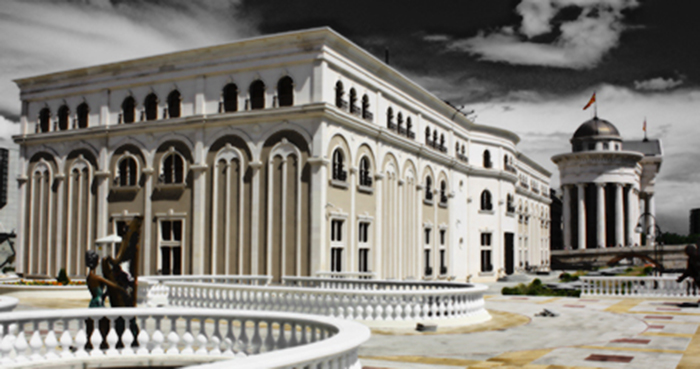
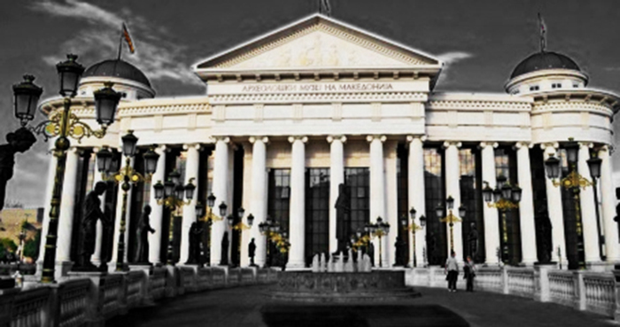
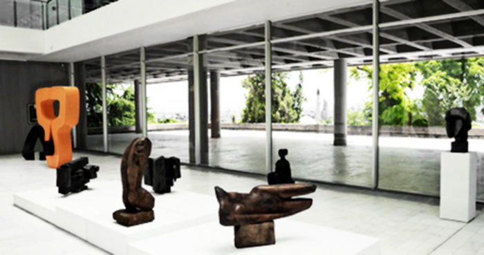
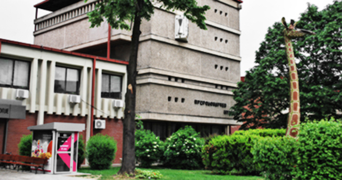
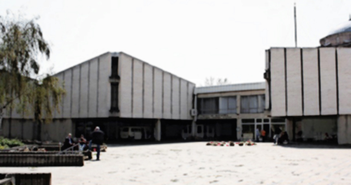
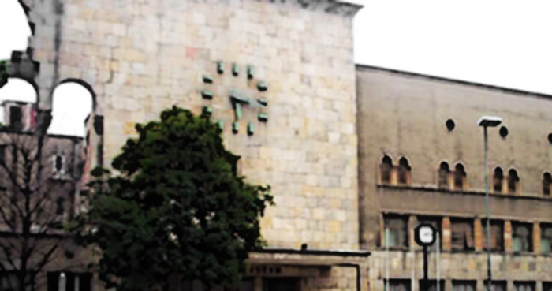
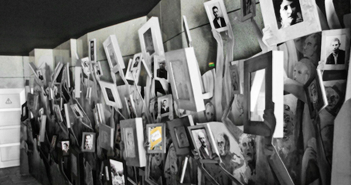
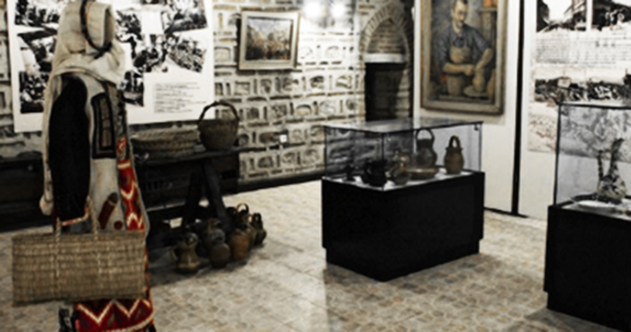
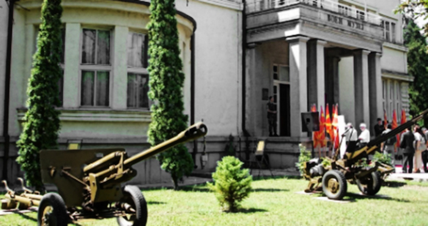

Museum of Macedonian Struggle  The Museum is located between the Museum of Archaeology, the Stone Bridge and the Vardar River. The construction
of the museum began on 11 June 2008 and it was opened to the public on the 20th anniversary of the declaration of independence on September 8th, 2011. The
exhibit covers the period from the beginning of the resistance movement against the Ottoman rule, until the declaration of independence from Yugoslavia on
8 September 1991. The guided tours take visitors through 13 exhibits ending in front of the original copy of the 1991 Declaration of Independence. The Archaeological Museum In October 2014 in Skopje, the new Archaeological Museum was officially
opened as a national institution form the highest rank in the protecting and presenting the
cultural heritage of the Republic of Macedonia. More than 6,000 artifacts from all historical
periods, from prehistory until the Middle Ages are presented to the public on three floors and an
area of 6,000 square meters. Besides the rich
archaeological exhibition, the museum also features glass cabinets, 15 wax figures, 83 paintings,
video-animations, ambient situations, and mosaics of the valuable cultural heritage.
Museum of Contemporary Art The Contemporary Art Museum of Macedonia museum was founded in 1963 following the disastrous
earthquake that hit the city. The larger part of the collection marks the art movements of 1950 - 1970,
although it also contains works of the early modern art. The older exhibits are mainly highlighted by works of Emil Filla,
Fernand Léger, and André Masson. The works of the internationally
well-known artists are of special importance, such as Pablo Picasso, Hans Hartung, Victor Vasarely,
Pierre Soulages, Alberto Burri, Christo, Zoltan Kemeny, Robert Adams,
Emilio Vedova, Antoni Clavé, and Georg Baselitz.
Museum of Natural Sciences  The Macedonian Museum of Natural Sciences, founded in October 1926,
collects, studies and displays the natural heritage of Macedonia.
The Museum's collections total more than 270,000
specimens of rocks, minerals, fossils, plants, fungi and animals from Macedonia, and
cover an area of 1700 m2.
Through numerous scientific projects, the Museum undertook numerous studies of the fossil and recent
fauna of Macedonia. The Museum continuously cooperates with various
similar institutions at national and international level.
The Museum of Macedonia The Museum of Macedonia is one of the oldest museums in the country, created by joining the archeological,
historical and ethnological museums. The archaeological, the oldest one, was opened in 1924
and that date is considered as an establishing date of the national museum. It is located in the Old Bazaar in Skopje,
near the Kale Fortress. It has a total area of 10.000 m², of which 6000 m² are meant for permanent or temporal exhibitions.
Within the museum is the Kuršumli An, a historical monument that was built in the 16th century.
Museum of the City of Skopje The Museum of the City of Skopje, founded in 1948, functions as a
complex that embodies the fields of archeology, history, ethnology, art history and the contemporary art in
the region of the city of Skopje. The clock is frozen at 5.17 on the morning of the tragic Skopje earthquake of 27
July 1963, which killed 1066 people and almost demolished the city. The museum is home to permanent еxhibitions
representing the history of Skopje, divided into four departments: archaeology, ethnology, history and art history.
The Holocaust Museum A memorial to the holocaust of the 7,148 Jews from Macedonia and the history of the
Jews in the Balkans. The Holocaust Memorial Center for the Jews of Macedonia was officially opened
on 10 March 2011, exactly 68 years after the German Forces deported the Macedonian Jews to the
Treblinka extermination camp.
Museum of Skopje's Old Bazaar  On the first floor of a 15-th century inn, the
museum is an essential stop for insight into Skopje's importance as a former trade
town. Using old photographs and maps, it shows the extent of the bazaar, which
once stretched to the river Vardar. The objects show
the wealth of the manufactured products.
Military Museum of Macedonia  The Military Museum of Macedonia was established
in 2006 as the first specialized national museum of military history of Macedonia,
which manifests its struggle for
freedom and gaining state independence. The museum discovers, collects, and
preserves authentic military items and organizes their exibition.
{kind=link}
{kind=link}
{kind=link}
{kind=link}
{kind=link}
{kind=link}
{kind=link}
{kind=link}
{kind=link}